UDN
Search public documentation:
MaterialsCompendiumJP
English Translation
中国翻译
한국어
Interested in the Unreal Engine?
Visit the Unreal Technology site.
Looking for jobs and company info?
Check out the Epic games site.
Questions about support via UDN?
Contact the UDN Staff
中国翻译
한국어
Interested in the Unreal Engine?
Visit the Unreal Technology site.
Looking for jobs and company info?
Check out the Epic games site.
Questions about support via UDN?
Contact the UDN Staff
UE3 ホーム > マテリアル＆テクスチャ > マテリアル要約
マテリアル要約
- マテリアル要約
- 概要
- パラメータ
- マテリアル作成時のカラーの思考法
- マテリアル表現式
- Abs（絶対値）
- Add（加算）
- AntialiasedTextureMask
- AppendVector
- BumpOffset
- CameraVector
- CameraWorldPosition
- Ceil
- Clamp
- ComponentMask
- Constant
- Constant2Vector
- Constant3Vector
- Constant4Vector
- ConstantBiasScale
- ConstantClamp
- Cosine
- CrossProduct
- Custom
- CustomTexture
- DepthBiasBlend
- DepthBiasAlpha
- DepthBiasedBlend
- DeriveNormalZ
- Desaturation
- DestColor
- DestDepth
- Distance
- Divide
- DotProduct
- DynamicParameter
- FlipBookSample
- Floor
- FluidNormal
- FMod
- FoliageNormalizedRotationAxisAndAngle
- FoliageImpulseDirection
- FontSampler
- Frac
- Fresnel
- FunctionInput
- FunctionOutput
- If
- LensFlareIntensity
- LensFlareOcclusion
- LensFlareRadialDistance
- LensFlareRayDistance
- LensFlareSourceDistance
- LightmapUVs
- LightmassReplace
- LightVector
- LinearInterpolate
- MaterialFunctionCall
- MeshEmitterDynamicParameter
- MeshEmitterVertexColor
- MeshSubUV
- MeshSubUVBlend
- Multiply
- Normalize
- ObjectOrientation
- ObjectRadius
- ObjectWorldPosition
- OcclusionPercentage
- OneMinus
- Panner
- ParticleMacroUV
- ParticleSubUV
- PerInstanceRandom
- PixelDepth
- Power
- ReflectionVector
- Rotator
- RotateAboutAxis
- ScalarParameter
- SceneDepth
- SceneTexture
- ScreenPosition
- Sine
- SphereMask
- SquareRoot
- Subtract
- StaticBool
- StaticBoolParameter
- StaticComponentMaskParameter
- StaticSwitchParameter（静的スイッチパラメータ）
- StaticSwitch
- TextureCoordinate
- TextureSample
- TextureSampleParameter2D
- TextureSampleParameterCube
- TextureObject
- TextureObjectParameter
- TextureSampleParameterMeshSubUV
- TextureSampleParameterMeshSubUVBlend
- TextureSampleParameterMovie
- TextureSampleParameterNormal
- TextureSampleParameterSubUV
- Time
- Transform
- TransformPosition
- TwoSidedSign
- WorldPosition
- WorldNormal
- VectorParameter
- VertexColor
- WindDirectionAndSpeed
概要
パラメータ
マテリアル作成時のカラーの思考法
マテリアル表現式
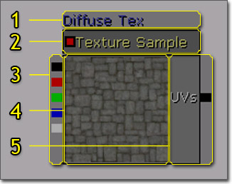
- Description（説明） - 全てのマテリアル表現式は共通の Desc プロパティを持ちます。このプロパティに入力されるテキストはワークスペースの表現式上にあるMaterial Editorに表示されます。このスペースは色々な用途に使用出来ますが、通常は表現式の使用目的や機能などについて短いメッセージを書き込む場として使用されます。
- Title bar（タイトルバー） - マテリアル表現式のプロパティに関する名前や関連情報を表示。
- Outputs（出力） - マテリアル表現式演算の出力結果をリンクする。
- Preview（プレビュー） - マテリアル表現式で出力された値のプレビューを表示。リアルタイムの更新が有効になると自動で更新されるが、スペースバーを使って手動で更新することも可能。
- Inputs（入力） - 取り込んだ値をマテリアル表現式で使用するためリンクする。
Abs（絶対値）
Abs は、数学用語「absolute value」（絶対値） を表す略語です。Abs表現式は絶対値または符号なしの値等、受け取った入力値を出力します。 Absによりマイナス符号を取り去って、負の数が正の数に変えられます。正の数に変化はありません。 *使用例：Absは通常DotProductと一緒に使用されます。ドット積は、 -1..0..1 の順番で値が始まり、一方で、ドット積の Abs は、 1..0..1 の順番となります。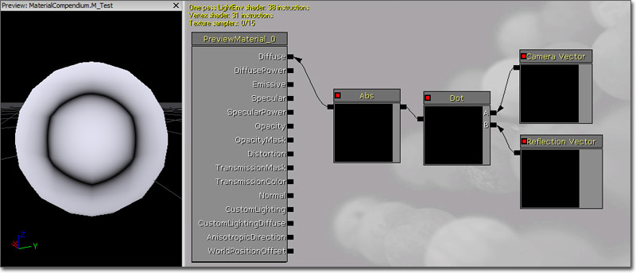
Add（加算）
Add表現式は二つの入力値を受け取り、二つを足して結果を出力します。 この加法演算はチャンネルごとに実行されます。例えばRチャンネルへの入力が加算され、Gチャンネルが加算され、そしてBチャンネルが加算されるといったかんじです。入力の片方が単一のConstant値でない限り、入力は両方とも同数のチャンネル数を持っていなくてはいけません。Constantは入力数に関係なくベクターに加法出来ます。 Inputs（入力）- A - 加算する値を受け取ります。
- B - 加算される値を受け取ります。
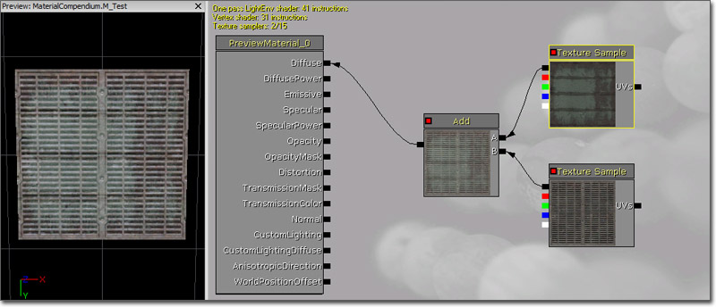
AntialiasedTextureMask
AntialiasedTextureMask 表現式はソフト（アンチエイリアス化）トランジッションマスクを使用したマテリアルの作成を可能にします。マスクは二つの複雑なマテリアルプロパティのブレンドや、アルファブレンドされたマテリアル（SoftMaskedとよく機能します）をフェードアウトする際に使用されます。Simpleはあるチャンネル（赤、緑、青、アルファ）で特定されたマスクと共にテクスチャを指定し、使用チャンネルを表現式に設定し、比較値を特定します。マスクの結果が0または１であるべき際に、チャンネルが格納するグレースケール値は、比較機能が定義するレンジが0＝黒、1＝白と仮定されます。この表現式はパラメータで、*Texture* プロパティが子MaterialInstancesに上書きされます。 Properties（プロパティ）- Threshold（閾値） - ピクセルの範囲内でカットオフとなった点を特定します。カットオフポイントを下回るピクセル範囲の値は黒、上回ると白表示となります。
- Channel（チャンネル） - マスクとして使用するテクスチャのチャンネルを特定する。
- Texture（テクスチャ） - 使用するマスクテクスチャを特定する。
- UVs - テクスチャマスクに適用するテクスチャ座標を受け取る。
Result = 1 if TextureLookup < Threshold then Result = 0実際の実装は、エイリアスを避けるため、ピクセル範囲により戻り値が0から1となるのでかなり複雑化します。 例（この小さな128x128テクスチャは最高のクオリティを保つため圧縮されていません）： https://udn.epicgames.com/pub/Three/MaterialsCompendium/ULogoLowBlurred.bmp ノーマルテクスチャとして使用（左上）、マテリアル式の説明として使用（右下）
 この技術は、拡大やブラーコンテンツの入力に最適です。圧縮は品質の低下となるので、非圧縮低解像度のテクスチャを使用してください。
この技術は、拡大やブラーコンテンツの入力に最適です。圧縮は品質の低下となるので、非圧縮低解像度のテクスチャを使用してください。
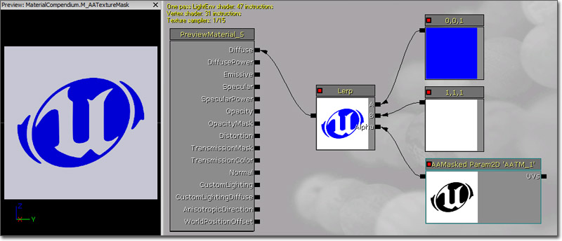
ImprovingAlphaTestWithAntiAliasing で実装に関する詳細を参照してください。AppendVector
AppendVector表現式は、オリジナル以上のチャンネルでベクターを作成できるようにチャンネルを組み合わせます。例えば、 二つのConstantsの各値を、二つのチャンネルを持つConstant2Vector値にするため追加します。 この表現式は、シングルテクスチャ内でチャンネルを再度呼び出す際や、複数のグレースケールテクスチャをひとつのRGBカラーテクスチャへまとめる際に有益です。 Inputs（入力値）- A - 追加する値を受け取る
- B - 追加される値を受け取る
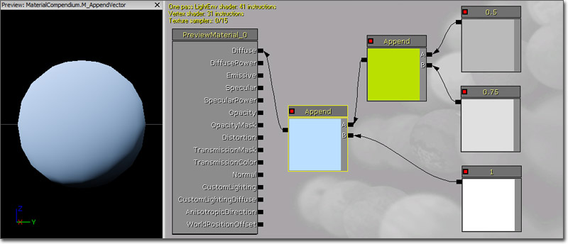
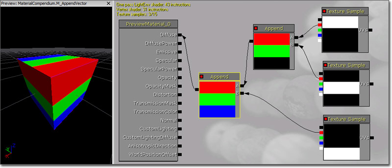
BumpOffset
BumpOffsetは一般的に「視差マッピング」の名で知られているUnreal Engine 3の用語です。BampOffset表現式は追加のジオメトリを必要とせずにデプスの錯覚を与えることができます。BumpOffsetマテリアルは、デプスの情報を与えるのに _heightmap_ を使用します。ハイトマップの値が明るければ明るいほど、マテリアルはより「ポップアウト」され、それらの領域はカメラがサーフェスを移動するにつれて 視差（シフト）します。ハイトマップの暗い領域は、「遠くに離れて」おり、最小限のシフトをします。 Properties（プロパティ）- HeightRatio - _heightmap_から渡されたデプスの乗数です。値が大きければ大きいほど、極端な深度になります。通常は0.02から0.1の範囲です。*
- ReferencePlane - 効果をもたらしたいテクスチャ領域の高さの概算を特定します。0の値は表面のテクスチャが完全に歪んだ表示となり、0.5（デフォルト値）の値は表面の一部が沈んだ状態でありながら一部が突き出た表示となります。*
- * Coordinate（座標）* - 表現式で変更するためベースのテクスチャ座標を受け取ります。
- * Height（高さ）* - heightmapとして使用するためテクスチャ（または値）を受け取ります。
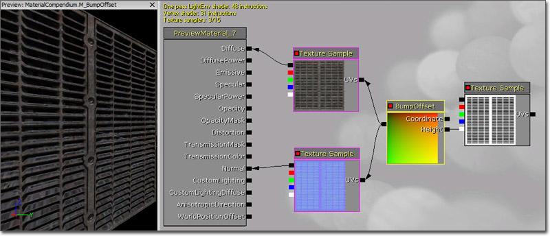
CameraVector
CameraVectorは表面を基準にカメラの方向を示す3つのチャンネルのベクター値を出力します。言い換えるとピクセルからカメラの方向を表します。 使用例: CameraVectorは、CameraVectorとComponentMaskをつなぐ偽造環境マップを作成する際にしばし使用されます。またCameraVectorのxとyチャンネルをテクスチャ座標として使用します。 (Hover for animated preview)
CameraWorldPosition
CameraWorldPosition表現式は、ワールドのカメラ位置を示す3つのチャンネルベクター値を出力します。 カメラが回転するとプレビューの球形の色が変化します。
Ceil
Ceil表現式は値を受け取り、一番近い整数へ 切り上げ て結果を出力します。Floor と Fracも参照してください。 例: 0.2のCeilは1.0、（0.2、1.6）のCeilは（1.0、2.0）になります。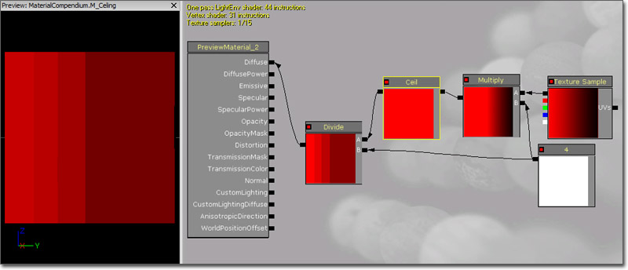
Clamp
Clampは受け取った値を最小値（Min）と最大値（Max）が定義された特定の範囲で制約されます。0.0の最小値と0.5の最大値は、結果値が決して0.0より小さく、または0.5より大きくならないことを意味します。 Inputs（入力値）- 最小値（Min） - クランプする際の最小値を受け取ります
- 最大値（Max） - クランプする際の最大値を受け取ります
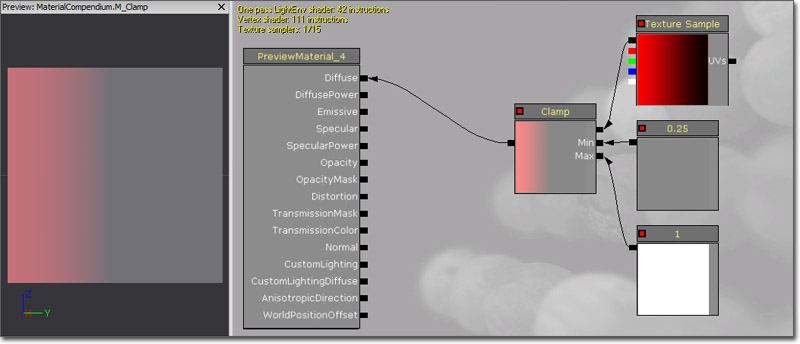
ComponentMask
ComponentMask表現式で入力から出力へ渡すための特定のチャンネルサブセット（R、G、B、またはA）を選択できます。 入力に引き渡しチャンネルが存在しないと、入力がシングルのConstant値でない限りエラーが生じます。その場合、単一値がそれぞれのチャンネルに引き渡しされます。選択された現在の引き渡しチャンネルが式のタイトルバーに表示されます。 Properties（プロパティ）- R - チェックされると、赤もしくは最初の入力値のチャンネルが出力として渡される
- G - チェックされると、緑もしくは2番目の入力値のチャンネルが出力として渡される
- B - チェックされると、青もしくは3番目の入力値のチャンネルが出力として渡される
- A - チェックされると、アルファもしくは4番目の入力値のチャンネルが出力として渡される
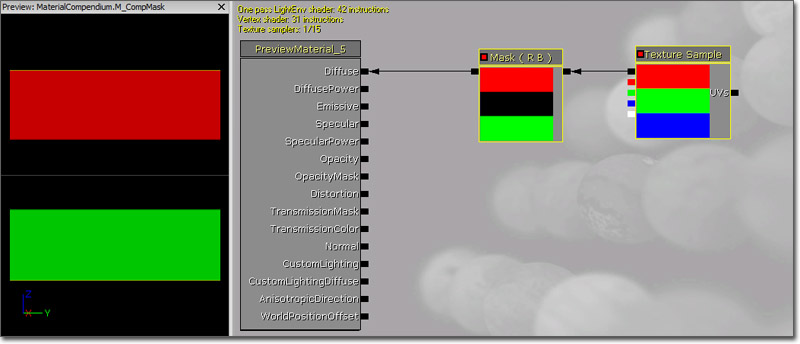
Constant
Constantは浮動小数点値を出力します。これは最もよく使用される表現式で、入力のチャンネル数に関係なくいかなる入力と接続します。 Properties（プロパティ）- R - 表現式が出力する浮動小数点値を特定します。
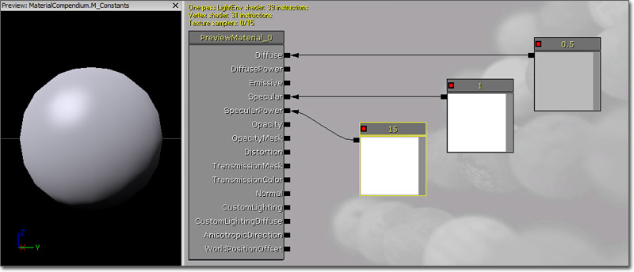
Constant2Vector
Constant2Vectorは2チャンネルのベクター値を出力します。すなわち、二つの定数です。 Properties（プロパティ）- R - 赤の浮動小数点値、または表現式が出力する最初のベクターチャンネルを特定します。
- G - 緑の浮動小数点値、または式が出力する2番目のベクターチャンネルを特定します。
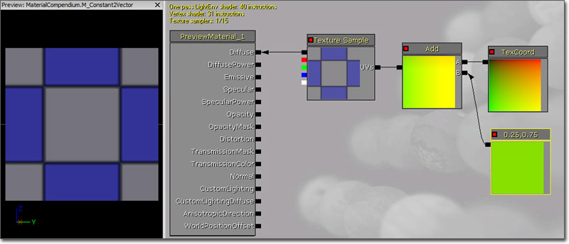
Constant3Vector
Constant3Vectorは3チャンネルのベクター値を出力します。すなわち3つの定数です。RGBカラーは各チャンネルが色に割り当てられる（赤、緑、青）Constant3Vectorとして考えられます。 Properties（プロパティ）- R - 赤の浮動小数点値、または式が出力する最初のベクターチャンネルを特定します。
- G - 緑の浮動小数点値、または式が出力する2番目のベクターチャンネルを特定します。
- B - 青の浮動小数点値、または式が出力する3番目のベクターチャンネルを特定します。
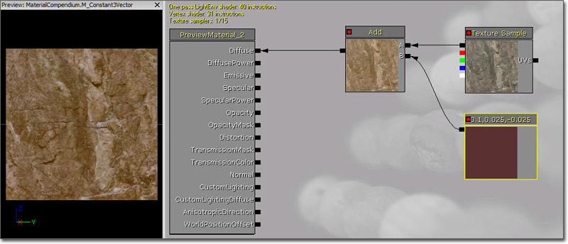
Constant4Vector
Constant4Vectorは4チャンネルのベクター値を出力します。 すなわち4つの定数です。RGBAカラーは各チャンネルが色に割り当てられる（赤、緑、青、アルファ）Constant4Vectorとして考えられます。 Properties（プロパティ）- R -赤の浮動小数点値、または式が出力する最初のベクターチャンネルを特定します。
- G - 緑の浮動小数点値、または式が出力する2番目のベクターチャンネルを特定します。
- B - 青の浮動小数点値、または式が出力する3番目のベクターチャンネルを特定します。
- A - アルファの浮動小数点値、または式が出力する4番目のベクターチャンネルを特定します。
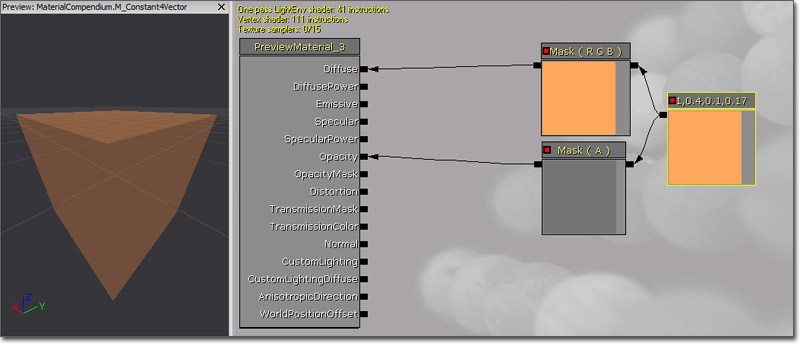
ConstantBiasScale
ConstantBiasScaleは入力値を受け取り、バイアス値を加算して、スケーリング係数を掛けて結果を出力します。例えば入力データを[-1、1]から[0、1]へ変換する場合、バイアス値に1.0、スケーリング係数に0.5を使います。 Properties（プロパティ）- Bias（バイアス） - 入力に加算される値を特定します。
- Scale（スケール） - バイアスがかかった結果の乗数を特定します。
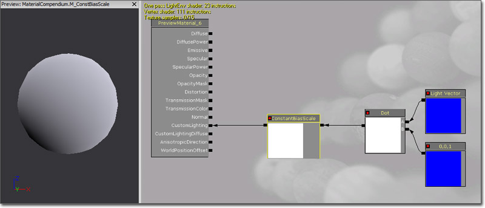
ConstantClamp
ConstantClampはClampと同関数を実行しますが、ノードの最小値と最大値を使用して簡素化がされ使いやすくなっています。時間と共に変数を必要としない最少、最大クランプ値（出力値を0から1へクランプ）と併用すると有益です。 Properties（プロパティ）- 最小値（Min） - クランプ時に使用する最小値を特定します。
- 最大値（Max） - クランプ時に使用する最大値を特定します。
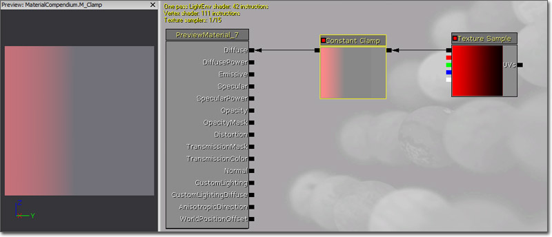
Cosine
Cosineは入力値（ラジアン）のコサインを出力します。この関数は、Timeと入力値を関連付けして継続的な振動の波形を出力することでよく知られています。出力値は－1と1の周期を行ったり来たりします。波形を視覚的に表示したものが以下となります。 Properties（プロパティ）
Properties（プロパティ）
- Period - 合成振動の周期を特定します。 すなわちこれによって一つの振動が起こるまでの時間がわかります。

CrossProduct
CrossProductは3チャンネルのベクター値の二つの入力の外積を計算し、3チャンネルのベクター値の結果を出力します。空間に二つのライン（またはベクター）が与えられ、外積は両方の入力に対して垂直なライン（またはベクター）となります。 Inputs（入力値）- A - 3チャンネルのベクター値を受け取ります。
- B - 3チャンネルのベクター値を受け取ります。
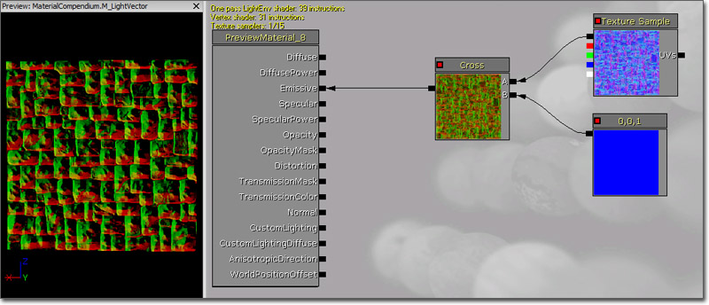
Custom
Customは任意量のインプットを実行するカスタムHLSLシェーダーコード書き、実行結果を出力します。 注意事項！ カスタムノードの使用は定数畳み込みを妨げ、内蔵ノードで実行する同等バージョンよりもかなり多くの指示/命令を仰ぐことになります。 定数畳み込みは、必要に応じてシェーダー指示の数の削減をUE3で検証するために採用されました。例えば、「Time->Sin->Mul by parameter->Add to something」といった一連の表現式は、UE3では一つの指示へ折り畳まれます。これは表現式の全ての入力（Time、parameter）は全体のdraw呼び出しの定数であるため、ピクセルごとの変換をしないことにより可能となります。UE3はカスタムノード内のものを折り畳むことが出来ません。これは既存ノードの同等バージョンで作成されたものよりも多少非効率なシェーダーを実行します。結果として、既存ノードで不可能な機能群へのアクセス権がある際はカスタムノードのみの使用が最善です。 *その他の注意事項: カスタムノードに書かれたシェーダーコードはターゲットプラットフォームへ「現状のまま」コンパイルされます。 * もしシェーダーがPC用にコンパイルされた場合、有効なHLSLとみなされます。PS3用にコンパイルされた場合は有効なCgとみなされます。 Properties（プロパティ）- Code - 表現式が実行するHLSLコードを含みます。
- Output Type - 表現式が出力する値のタイプを特定します。
- Description - マテリアルエディタの表現式のタイトルバーに表示するテキストを特定します。
- Inputs - 式が使用する入力の配列です。
- Input Name - 入力の名前を特定。 これはマテリアルエディタの表現式に表示される名前、また入力値を参照するためのHLSLコード内で使用される名前と一緒です。
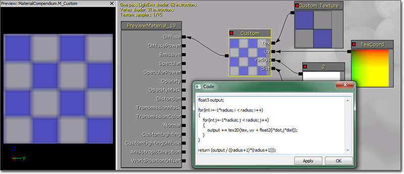
CustomTexture
CustomTextureはCustom表現式内のHLSLコードにあるテクスチャを参照します。通常はtex2D や類似関数でHLSL内やサンプリングします。 カスタムノードで通常のTextureSampleをインプットとして使用することが可能ですが、その場合サンプルはカスタムノード外部で計算され、結果がfloat4値として渡されます。ループ内で同テクスチャを数回サンプル化したい場合、またはtex2Dbias、tex2Dlod、tex2Dproj等（HLSL文書でこれらの使用目的を参照してください）のサンプリング指示を使用したい場合、この方法は柔軟性に欠けます。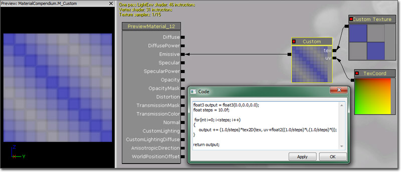
DepthBiasBlend
DepthBiasBlendはスプライトが他のジオメトリと交差する際にスプライトパーティクルに生じる鋭いエッジを削除するため、マテリアルでよく使用されます。深度バイアスブレンディングはsrcとdstピクセルの深度を比較し、ピクセルを描画する際のアルファを決めるためのバイアスを使用します。 詳細はDepthBiasBlendUsageを参照してください。 DepthBiasBlendは他の深度バイアスブレンディングノードと比べて速度が遅く、柔軟性に劣る場合があります。DepthBiasAlphaを代わりにご使用ください。 プログラマー: DepthBiasBlenは深度バイアスブレンディングノードとして最も好まれない関数です。 理由は 1）直近のフレーム/深度バッファリゾルブからカラーと深度をサンプリングするから（遅い） 2）ブレンドはハードウェアブレンディングではなくシェーダーコードで実行される（遅い）3）DepthBiasBlendのテクスチャ入力は、任意の式入力ではなくテクスチャプロパティ経由DepthBiasAlpha
DepthBiasAlphaはスプライトが他のジオメトリと交差する際にスプライトパーティクルに生じる鋭いエッジを削除するため、マテリアルでよく使用されます。深度バイアスブレンディングはsrcとdstピクセルの深度を比較し、ピクセルを描画する際のアルファを決めるためのバイアスを使用します。詳細はDepthBiasBlendUsageを参照してください。 DepthBiasAlphaは深度バイアスブレンディングの使用に好まれるノードです。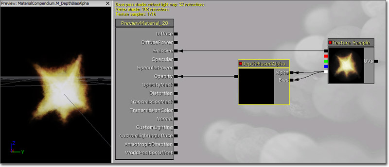
プログラマー: ブレンドがシェーダーではなくハードウェアで実行されるので、DepthBiasAlphaは深度バイアスブレンディングに好まれます。DepthBiasedBlend
DepthBiasedBlendはスプライトが他のジオメトリと交差する際にスプライトパーティクルに生じる鋭いエッジを削除するため、マテリアルで最もよく使用されます。深度バイアスブレンディングはsrcとdstピクセルの深度を比較し、ピクセルを描画する際のアルファを決めるためバイアスを使用します。詳細はDepthBiasBlendUsageを参照してください。 DepthBiasedBlendはDepthBiasAlphaよりも速度が遅くなります。DepthBiasAlphaを代わりにご使用ください。 プログラマー: DepthBiasedBlendは深度バイアスブレンディングノードとして最も好まれない機能です。 理由は 1） カラーと深度を直近のフレーム/深度バッファリゾルブからサンプリングする（遅い） 2）ブレンドはハードウェアブレンディング経由ではなくシェーダーで実行される（遅い）。DeriveNormalZ
DeriveNormalZ表現式はタンジェント空間法線のZコンポーネントから派生します。XとYコンポーネントを渡し、結果として3チャンネルタンジェント空間法線を出力します。ZはZ = sqrt（1 - (x * x + y * y)）と計算されます。 Inputs（入力値）- InXY - 2チャンネルベクター値の形式でタンジェント空間法線のXとYコンポーネントを受け取ります。

Desaturation
Desaturationは入力をデサチュレート（非飽和）にする、または入力されたカラーを一定のパーセンテージに基づいてグレーの影へ変換します。 Properties（プロパティ）- Luminance Factors（ルミナンスファクター） -各チャンネルがカラーをデサチュレートするのに貢献する量を特定します。これによって、デサチュレート時は、緑は赤よりも明るく、またブルーよりも赤のほうが明るくなるように制御されます。
- Percent（パーセント） - 入力に適用するデサチュレーションの量を特定します。割合の範囲は0.0（完全なデサチュレーション）から1.0（完全なオリジナルカラー、デサチュレーションなし）です。
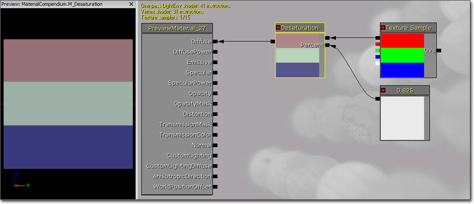
プログラマー: デサチュレート色のDを定義し、Iカラーと輝度係数のLを入力します。出力はO = （1-Percent）*（D.dot（I）） + Percent*I になります。DestColor
DestColorは現在描画されているピクセルの背景で、レンダリングされているシーンの既存カラーを出力します。 使用例: ウォーターマテリアルは水中の岩のカラーをサンプリングする際に使用出来ます。
DestDepth
Destdepthは現在描画されているピクセルの背景でレンダリングされているシーンの既存深度を出力します。 使用例: DestDepthを駆使して、水に「深さ」や霧効果与えることが出来ます。水深が深いほど（深度が大きい）、水中の岩が不明瞭となります。 プログラマー: DestDepthはロー深度値を返します（0から2^24-1の整数）。この非線形の深度は以下の様に標準化することが出来ます：
プログラマー: DestDepthはロー深度値を返します（0から2^24-1の整数）。この非線形の深度は以下の様に標準化することが出来ます：
MaxZ = 16777215 NormalizedDepth = 1 - MaxZ / (DestDepth + MaxZ)結果として標準化された深度は0.0から1.0の範囲の線形になります。
Distance
Distanceは二つのポイント、カラー、位置、ベクターの（ユークリッド）距離間を計算し、結果値を出力します。これは1、2、3、または4つのコンポーネントベクターに機能しますが、表現式への両入力値が同数のチャンネルを持っていなくてはいけません。 Inputs（入力値）- A - 任意の長さの値またはベクターを受け取ります。
- B - 任意の長さの値またはベクターを受け取ります。
 Pseudo code: Result = length(A - B)
Low level HLSL code: float Result = sqrt(dot(A-B, A-B))
Pseudo code: Result = length(A - B)
Low level HLSL code: float Result = sqrt(dot(A-B, A-B))
Divide
Divideは二つの入力値を受け取り、1 番目の値を2番目の値で割った結果値を出力します。除算はチャンネルごとに計算されます。 つまり、最初のRチャンネルが二番目のチャンネルによって、最初のGチャンネルが二番目のチャンネルによって除算される形です。約数が単精度浮動小数点値でない限り入力値は同数でなくてはいけません。 Inputs（入力値）- A - 除算される値を受け取る、被除数。
- B - 除算する値を受け取る、約数。
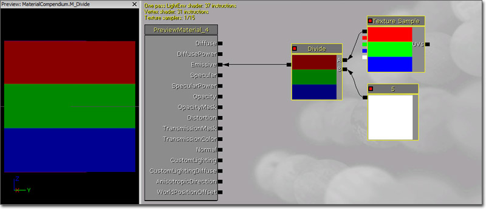
DotProduct
DotProductはdot product（内積）、もしくはその他に投影されたあるベクターの長さを計算します。この計算はフォールオフの計算に多々使用される技術です。DotProductはベクター入力値に同数のチャンネル数を必要とします。 Inputs（入力値）- A - 任意の長さの値またはベクターを受け取ります。
- B -任意の長さの値またはベクターを受け取ります。
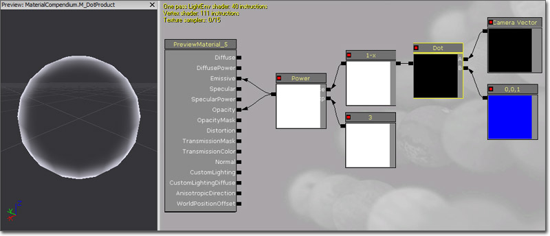
DynamicParameter
DynamicParameterは、いかなるマナーでも使用できるマテリアルに最高4つの値を渡し、パーティクルエミッタ―にコンデュイットを提供します。これらの値はエミッタ―に置かれたParameterDynamicモジュールを経由してCascadeで設定されます。 Properties（プロパティ）- Param Names - パラメータの名前の配列。この値がMaterial Editorに表示される表現式の出力テキストを決定し、CascadeのParameterDynamicモジュールでパラメータを参照する名前として使用されます。
- Param1 - Param Namesプロパティにある最初のパラメータの値を出力する。この出力の名前はParam Names プロパティにある値に基づいて変更出来ます。
- Param2 - Param Namesプロパティにある二番目のパラメータの値を出力する。この出力の名前はParam Names プロパティにある値に基づいて変更出来ます。
- Param3 - Param Namesプロパティにある三番目のパラメータの値を出力する。この出力の名前はParam Names プロパティにある値に基づいて変更出来ます。
- Param4 - Param Namesプロパティにある四番目のパラメータの値を出力する。この出力の名前はParam Names プロパティにある値に基づいて変更出来ます。
FlipBookSample
FlipBookSampleは、マテリアルで生き生きとしたflipbookテクスチャの使用を可能にします。TextureSampleとかなり似た関数ですが、flipbookテクスチャとしてインポートされたテクスチャはFlipBookSampleを使用しなくてはいけません。FlipBookSampleは必要なUV操作を実施し、flipbookテクスチャのHorizontalImage、VerticalImages、FrameRateプロパティに基づいて、flipbookテクスチャのサブイメージをレンダリングします。 Properties（プロパティ）- Texture - 使用するflipbookテクスチャを特定します。
- UVs - テクスチャに適用するテクスチャ座標を受け取ります。

Floor
Floorは値を受け取り、前の整数と同じ 概数 にして結果を出力します。Ceil と Fracも併せて参照してください。 例: 0.2のFloorは0.0、（0.2、1.6）のFloorは（0.0、1.0）です。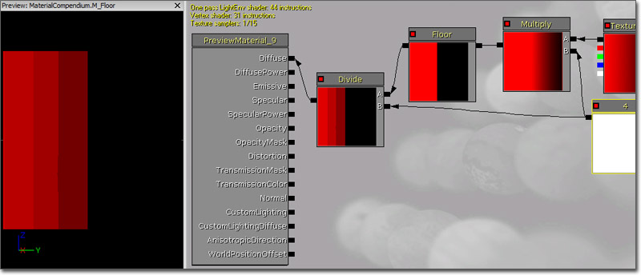
FluidNormal
FluidNormal表現式はFluidSurfaceActorによって作成される法線マップへのアクセスを与えます。リップルとウェーブを含む全てのタービランス、オブジェクトが流体サーフェスで動的に相互処理されることによって起こります。 流体サーフェスによって計算される相互作用的なタービランスに加えて、環境光のタービランスを作成するその他の法線マップと併用して使用できます。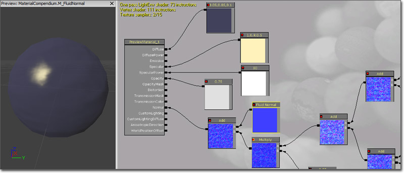
FMod
FModは二つの入力値を除算した後の浮動小数点余りを返します。 (Hover for animated preview)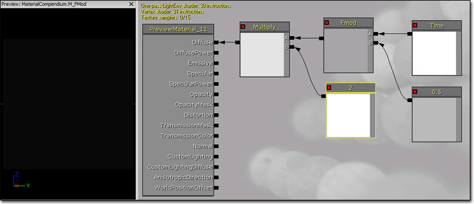
FoliageNormalizedRotationAxisAndAngle
FoliageNormalizerotationAxisAngleは、RotateAboutAxisと併用使用にデザインされ、マテリアルがInteractiveFoliageActorへ適用されると自動的に値がコードによって設定されます。RGMはInteractiveFoliageActorのスプリングオフセットを適用するため、標準化された回転軸を含みます。InteractiveFoliageActor で例を参照してください。
FoliageImpulseDirection
FoliageImpulseDirection の出力値は、マテリアルがInteractiveFoliageActorへ適用されると自動的にコードによって設定されます。また、InteractiveFoliageActorスプリングオフセットへrawアクセスを与えます。 InteractiveFoliageActor で例を参照してください。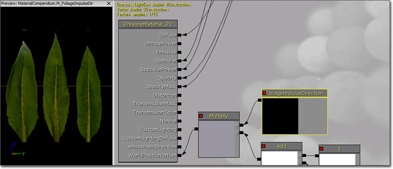
FontSampler
FontSampler表現式は、通常の2Dテクスチャとしてフォントリソースからテクスチャページのサンプル化を可能にします。フォントのアルファチャンネルは、フォントアウトライン値を含みます。有効なフォントページのみ特定することが出来ます。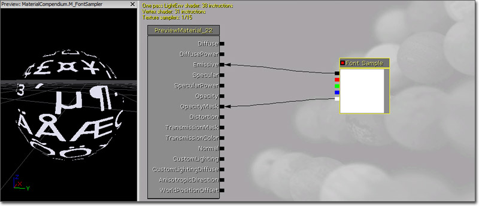
Frac
Fracは値を受け取り、これらの値の小数部分を出力します。 Ceilと Floorも参照してください。 例: 0.2のFrancは0.2、（0.0、1.6）のFracは（0.0、0.6）です。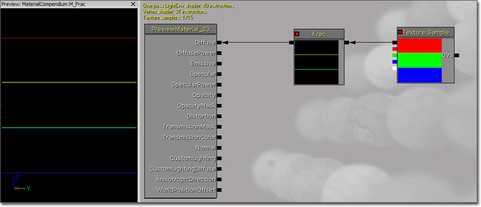
Fresnel
Fresnelは表面法線のdot product（内積）とカメラの方向に基づいてフォールオフを計算します。表面法線が直接カメラに向いている時、0の値が出力されます。表面法線がカメラに垂直に向き合っている時は、1の値が出力されます。結果は[0、1]にクランプされるので、真ん中にネガティブカラーを持ちません。 Properties（プロパティ）- Exponent（指数） - 出力値がどれくらいの速さでフォールオフするか特定します。大きな値はぴんと張った、または素早いフォールオフを意味します。
- Normal - サーフェスの法線を表す3チャンネルのベクター値を受け取ります。通常は法線マップです。 法線が特定されていない場合、メッシュのタンジェント法線が使用されます。
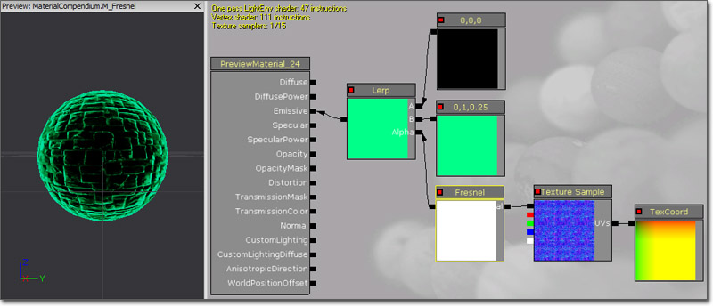
FunctionInput
FunctionInput表現式は、関数の入力の一つを定義する、マテリアル関数のみに置かれます。 Properties（プロパティ）- Input Name（入力名） - 入力名を表示するMaterialFunctionCall は、入力を格納するマテリアル関数を使用します。
- Description（説明） - 入力の説明は、Materialfunction呼び出しにある入力用のコネクターがマウスポインタ上に重なると、ツールヒントとして表示されます。
- Input Type（入力タイプ） - 入力が要求するデータのタイプ。入力用に渡されたデータはこのデータタイプに型変換され、データに互換性がない理由で型変換に失敗するとコンパイラーエラーを表示します。
- Preview Value（プレビュー値） - マテリアル関数を編集する時、入力のプレビューとして使う値。
- Use Preview Value As Default（デフォルトのプレビュー値として使用） - 有効の際、データが渡されないと入力のデフォルト値として Preview Value が使用されます。
- Sort Priority（プライオリティをソート） - MaterialFunctionCallに表示する入力の順番を決定する際に、入力のプライオリティを特定します。
FunctionOutput
FunctionInput表現式は、 関数の出力値の一つを定義するマテリアル関数のみに入れることができます。 Properties（プロパティ）- Output Name（出力名） - MaterialFunctionCallに表示される出力名は、出力値が含まれるマテリアル関数を使用します。
- Description（説明） - 出力値の説明は、MaterialFunction呼び出しにある入力用のコネクターがマウスポインタ上に重なると、ツールヒントとして表示されます。
- Sort Priority（ソートのプライオリティ） - MaterialFunctionCallに表示する出力値の順番を決定する際に、出力のプライオリティを特定します。
If
If表現式は二つの入力値を比較し、比較結果に基づいてその他の3つの値のうち一つを渡します。比較される二つの入力値は単精度浮動小数点でなければいけません。 Inputs（入力値）- A - 単精度浮動小数点を受け取ります。
- B -単精度浮動小数点を受け取ります。
- A>B - Aの値がBの値より大きい時、値を受け取り出力します。
- A=B -Aの値とBの値が同等の時、値を受け取り出力します。
- A<B - Aの値がBの値よりも小さい時、値を受け取り出力します。
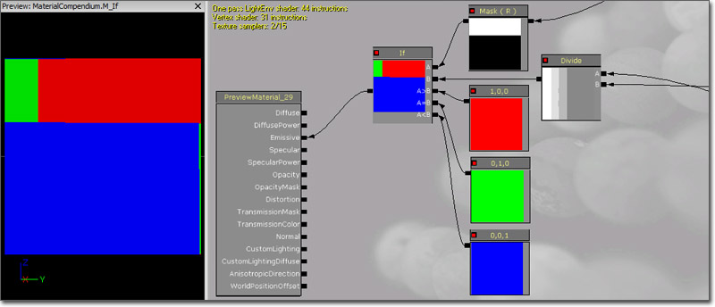
LensFlareIntensity
LensFlareIntensity表現式は、レンダリングしているレンズフレアの'ConeStrength'を提供します。コーン（円錐）強度はフレアソースに関連するビューのポジションに対するフレアの輝度を決定するために提供されています。フレアソースがレンズフレアの半径外に位置している場合、コーン強度は0.0になります。 （レンズフレアの半径が0.0fに設定されている場合、状態がいつもオンであるとみなされます）半径内に位置している場合、コーン強度は1.0fになります。レンズフレアが指向性コーンと一緒に設定されていて、ビューがコーン内側に位置及びフレアに向いている場合、ConeStrength は1.0になります。外部コーンを通り抜ける際に0.0fへフォールオフします。LensFlareOcclusion
LensFlareOcclusion はレンダリング中のレンズフレアのオクルージョン値を提供します。値はレンズフレアのScreenPercentageMap の参照値として使用されているプリミティブ型の範囲の割合によって決定されます。LensFlareRadialDistance
LensFlareRadialDistance はスクリーンのセンターからレンダリングされているエレメントの放射距離を処理します。値はレンズフレアエレメントのbNormalizeRadialDistance を使って0.0f（中央）から1.0f（端）の値に標準化することが出来ます。値は通常0.0f（中央）から1.0f（垂直または水平縁）、1.4f（スクリーンのコーナー）となります。1.4fの値は、スクリーンの幅と高さの割合になります。LensFlareRayDistance
LensFlareRayDistance はレンダリングされているフレアエレメントの光線距離を処理します。LensFlareSourceDistance
LensFlareSourceDistance はスクリーン空間でソースからレンダリングされているエレメントの距離を処理します。LightmapUVs
LightmapUVs は2チャンネルのベクター値という形でライトマップのUVテクスチャを出力します。ライトマップUVが利用不可能な場合、2チャンネルのベクター値（0.0）を出力します。LightmassReplace
LightmassReplace 表現式は、通常のレンダリング目的のマテリアルコンパイル時にRealtime入力を通過し、グローバルイルミネーション処理の際にマテリアルをLightmassへエクスポートする時、Lightmass入力を通過します。これは、WorldPositionのようなエクスポートされたバージョンが正常に処理されない際など回避策として有益です。 Inputs（入力値）- Realtime - 通常のレンダリング処理のため通過する値を受け取ります。
- Lightmass - マテリアルをLightmassへエクスポートする際に通過する値を受け取ります。
LightVector
LightVectorは表面に対する光の方向を表す3チャンネルのベクター値です。 使用例: LightVectorはカスタムの光源処理アルゴリズムの計算に使用されます。簡素なランバート照明モデルが例として挙げられます。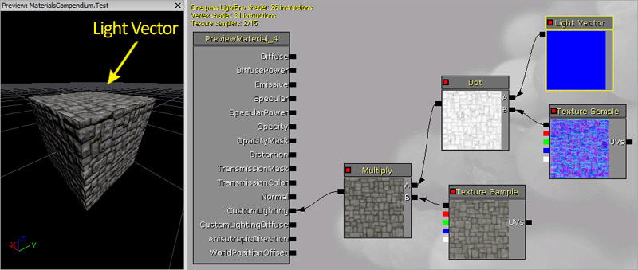
LinearInterpolate
LinearInterpolate 表現式はマスクに使用された入力値に基づいて二つの入力値をブレンドします。これはPhotoshopでレイヤーマスクを処理する際のテクスチャ間のトランジッション（変形）を定義するマスクのようなものです。マスクアルファの輝度は、二つの入力値から受け取るカラーの割合を決定します。アルファが1.0/White（白）の場合、最初の入力値が使用されます。アルファ値が0.0/black（黒）の場合は二番目の入力値が使用されます。 アルファ値がグレー（0.0と1.0間のどこかの値）の場合、出力値は二つの入力値のブレンドになります。ブレンドはチャンネル毎に処理されることにご留意ください。ですからアルファ値がRGBカラーの時、アルファの赤のチャンネル値によってA と B の赤のチャンネル間のブレンドが定義されます。これは、A と B の緑のチャンネルの間のブレンドを定義する、アルファの緑のチャンネルとは 無関係 です。 Inputs（入力）- A - 白にマッピング化された値を受け取ります。
- B - 黒にマッピング化された値を受け取ります。
- Alpha - アルファマスクとして使用する値を受け取ります。

MaterialFunctionCall
MaterialFuntionCall表現式は、他のマテリアルまたは関数から外部のMaterialFunctionの使用を可能にします。外部関数の入力と出力は、関数呼び出しノードの入力と出力値になります。 これらの関数の一つをセットしている時にContent BrowserでMaterialFunctionが選択されると、自動的に割り当てられます。 Shortcut（ショートカット）: F + Left Mouse Click Properties（プロパティ）- Material Function（マテリアル関数） - MaterialFunctionの使用を特定します。
MeshEmitterDynamicParameter
MeshEmitterDynamicParameter は、カスケード表示にマテリアルとメッシュエミッターが使用される場合を除いて、標準のDynamicParameterと同一の関数です。カスケードからマテリアルへ渡される4つの同出力値を渡します。MeshEmitterVertexColor
MeshEmitterVertexColor は、マテリアルにとってメッシュパーティクルエミッターに影響するカラーモジュールの出力値までのアクセスポイントです。メッシュエミッターによってパーティクルとしてレンダリングされる各メッシュには利用できるカラーがあります。これがそのカラーです。 Outputs（出力値）- RGB - 3チャンネルのRGBカラーのベクター値を出力します。
- R - 赤のカラーチャンネルを出力します。
- G - 緑のカラーチャンネルを出力します。
- B - 青のカラーチャンネルを出力します。
- A - アルファのカラーチャンネルを出力します。
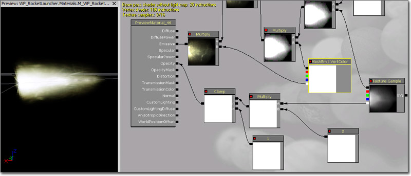
MeshSubUV
MeshSubUV表現式は、カスケード表示にマテリアルがメッシュエミッタと使用される際の絶対的な使用を除いて、ParticleSubUVと同一の関数です。 表現式に適用されているテクスチャからサブイメージを表示する機能を提供しますが、サブイメージ間をブレンドする機能はありません。この式は、メッシュパーティクルの全てのフレームに対しテクスチャ座標が再パックすることを防ぐために、通常のParticleSubUVの代わりに使用する必要があります。 Properties（プロパティ）- Texture（テクスチャ） - 使用するテクスチャを特定します。
- UVs - UVの入力値は無視されて何も起こりません。
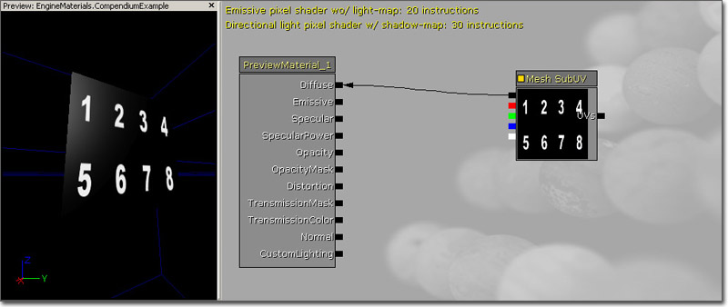
MeshSubUVBlend
MeshSubUVBlend表現式は、カスケード表示で線形ブレンドやランダムなブレンドモードを使用してサブイメージ間をブレンド出来る機能を除いて、MeshSubUVと同等の機能を持ちます。 Properties（プロパティ）- Texture（テクスチャ） - 使用するテクスチャを特定します。
- UVs - UVの入力値は無視されて何も起こりません。
Multiply
Multiplyは二つの入力値を受け取り、その入力値を掛け合わせて結果を出力します。Photoshopのレイヤーのブレンドモードの乗算に似た機能です。乗算はチャンネルごとに計算されます。 つまり最初のRチャンネルが二番目の値と掛けられ、最初のGチャンネルが二番目の値と掛けられといった形になります。片方の値が単精度浮動小数点値でない限り、同数の入力値でなくてはいけません。 Inputs（入力値）- A - 乗算する最初の値を受け取ります。
- B - 乗算する二番目の値を受け取ります。
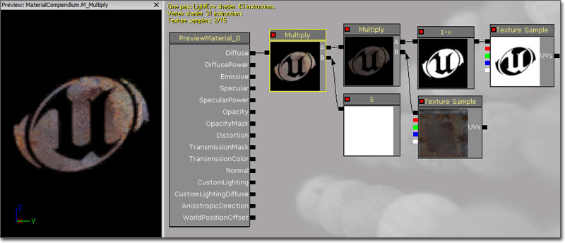
Normalize
Nomalizeは入力の標準値を計算して出力します。これは入力値の各コンポーネントがベクターのL2ノルム（長さ）で割られることを意味します。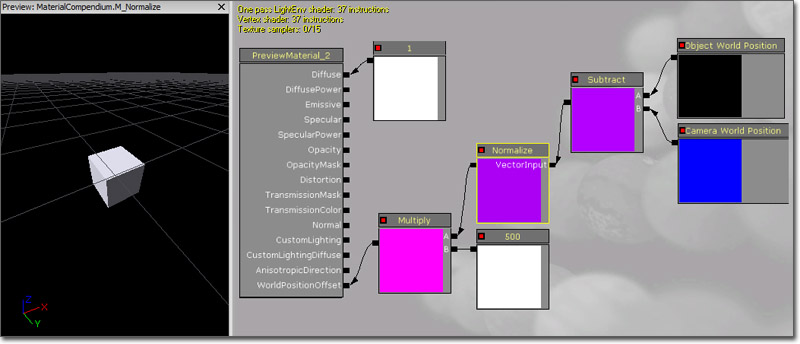
注釈: Normalマテリアル出力値に代入された表現式は標準化する必要はありません。ObjectOrientation
ObjectOrientationはオブジェクトのワールド空間のUpベクターを出力します。すなわち、適用されたマテリアルが指している、オブジェクトのローカルポジティブZ軸の方向です。
ObjectRadius
ObjectRadiusはオブジェクト範囲にあるワールド空間の半径を出力します。アクティブビューポート（ビューポート上部の下方向矢印の下）の「show bounds（範囲を表示する）」ビューモードを有効にしてから任意のオブジェクトの範囲をプレビューして、オブジェクトを選択します。ObjectWorldPosition で例を参照してください。ObjectWorldPosition
ObjectWorldPositionはオブジェクト範囲のワールド空間センター位置を出力します。例えるなら、フォーリッジで球状の光源を作成する際に有益です。 下記のノード設定は、オブジェクトポジションの1、オブジェクト半径0の値を持つオブジェクトの位置、ワールドの位置、そしてオブジェクトの半径を使用しています。
OcclusionPercentage
OcclusionPercentage表現式は、レンダリングされているオブジェクトのオクルージョンの割合を出力します。 ParticleSystem（None以外にOcclusionBoundMethod）とLensFlaresのみで使用されます。OneMinus
OneMinusは入力値を受け取り、値から1を引いて出力します。演算はチャンネル毎に実行されます。 Examples（例）: 0.4のOneMinusは0.6；（0.2、0.5、1.0）のOneMinusは（0.8、0.5、0.0）；（0.0、-0.4、1.6）のOneMinusは（1.0、-0.4、-0.6）となります。 Example Usage（使用例）: 入力カラーの範囲が[0、1]の時、OneMinusの効果は通常「invert」と呼ばれる機能と同等の効果があります。 つまり、OneMinusは入力値に加算すると白を作り出すといった、補完カラーを返します。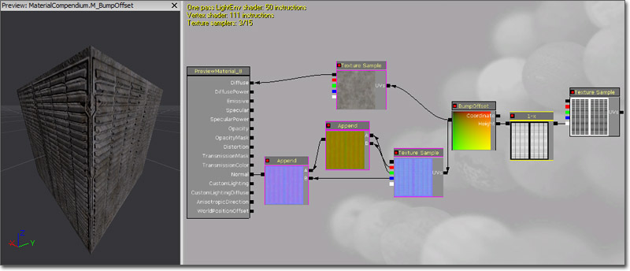
Panner
Pannerはテクスチャのパン、または移動に使用されるUVのテクスチャ座標を出力します。 Properties（プロパティ）- SpeedX - U方向へ座標がパンする速度を特定します。
- SpeedY - V方向へ座標がパンする速度を特定します。
- Coordinate（座標） - ベースUVのテクスチャ座標を受け取ってから修正します
- Time - 現在のパンの位置を決定するため値を受け取ります。通常はTimeによって一定のパン効果が提供されますが、Constant または ScalarParameterをある特定のオフセットまたはMatinee、UnrealScripを経由してパンを制御するために使用することも出来ます。

ParticleMacroUV
ParticleMacroUVは、パーティクルシステム全体へ連続的に2dテクスチャをマッピングする際に使用するUVのテクスチャ座標を出力します。つまりパーティクル全域でテクスチャがシームレスになります。UVは、タイル表示されるワールド空間の半径を決定するMacroUVPosition （MacroUVカテゴリ配下のParticleSystem、Cascadeで特定）とMacroUVRadiusを軸に展開されます。ParticleMacroUVノードは、法線テクスチャ座標と各パーティクル上にテクスチャをマッピングすることによってパターン化を解消し、パーティクル上の連続的なノイズのマッピングに有益です。 Properties（プロパティ）- Use View Space - Trueの時、各スプライトの深度に基づいて座標を効率よくオフセットし、爆発に放射ブラーの視差効果をもたらします。
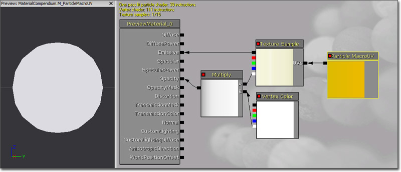
(Hover for animated preview)

ParticleSubUV
ParticleSubUVはテクスチャのサブイメージをパーティクルにレンダリングする際に使用します。ParticleSubUVはテクスチャ操作がCascadeで操作可能である点を除いて、フリップブックと似た機能です。 Properties（プロパティ）- Texture（テクスチャ） - 使用するテクスチャを特定します。
- UVs - UV入力は無視され何も起こりません。
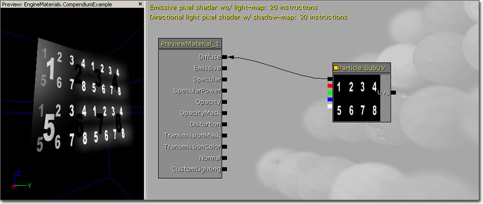
PerInstanceRandom
PerInstanceRandomはマテリアルが適用される静的メッシュの定数毎に、異なるランダムな浮動小数点値を出力します。InstancedStaticMeshComponentは必要に応じて、どこからでも使用できる様に保護されていないランダムな小数浮動点値をインスタンス用に設定します（例えば、ウィンドウの裏側のランダムなライトのレベル）。 定数ですが、メッシュの各インスタンスとは異なります。 出力値はターゲットプラットフォームの0からRAND_MAX間の整数になります。 注釈 InstancedStaticMeshアクタまたはその他のProcBuildings等のInstancedStaticMeshComponentsを利用するアクタに適用時のみ機能します。PixelDepth
PixelDepth は、現在レンダリングされているピクセルのカメラからの深度または距離を出力します。値の使用についての詳細は、DestDepthを参照してください。Power
Power表現式は二つの入力値を受け取り、BaseをExp乗の累乗をして結果を出力します。言い換えると、Baseがその値によってExp回乗算されます。 Inputs（入力値）- Base - ベース値を受け取ります。
- Exp - 指数値を受け取ります。
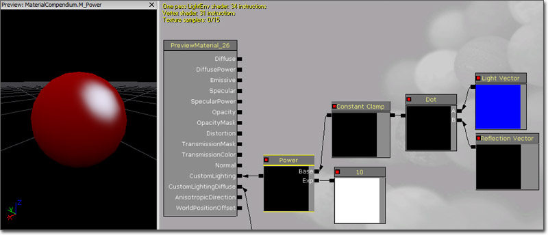
ReflectionVector
ReflectionVectorはCameraVectorと似通った機能ですが、表面法線を反映したカメラ方向を示す3チャンネルベクター値を出力します。 Example Usage（使用例） ReflectionVectorは一般に環境マップに使用されます。環境マップでは、リフレクションベクターのx/yコンポーネントがキューブマップテクスチャへのUVとして使用されます。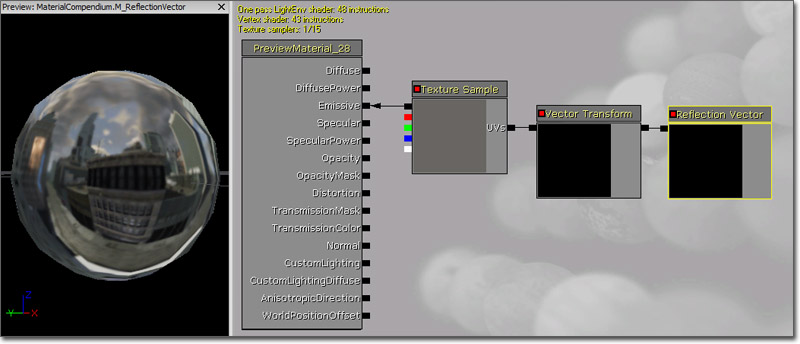
Rotator
Rotatorは回転テクスチャの作成に使用され、2チャンネルのベクター値という形でUVテクスチャ座標を出力します。 Properties（プロパティ）- CenterX - 回転の中心として使用するU座標を特定します。
- CenterY - 回転の中心として使用するV座標を特定します。
- Speed - 座標が時計回りに回転する速度を特定します。
- Coordinate（座標） - 後に表現式によって修正が可能なベースとなるUVテクスチャ座標を受け取ります。
- Time - 現在の回転位置を決定する値を受け取ります。通常はTimeによって回転定数効果をもたらしますが、Constantや ScalarParameterを使用して特定のオフセットの特定や、MatineeやUnrealScriptで回転を制御することが出来ます。
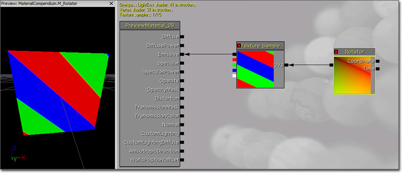
RotateAboutAxis
RotateAboutAxis表現式は回転軸、軸の点、回転角度に与えられた3チャンネルのベクター入力値を回転させます。簡素なシーヤよりもより品質の高いWorldPositionOffsetを使用しているアニメーションに有益です。InteractiveFoliageActorから例を参照してください。 Inputs（入力値） *NormalizedRotationAxisAndAngle - FoliageNormalizedRotationAxisAndAngleの出力値を受け取ります。- PositionOnAxis - 回転が生じる軸の位置を表す3チャンネルのベクター値を受け取ります。
- Position - オブジェクトの位置を表す3チャンネルのベクター値を受け取ります。
ScalarParameter
ScalarParameterは、マテリアルの定数またはオンザフライのコードによってアクセスや変更がされる単精度浮動小数点値（Constant）を出力します。 Properties（プロパティ）- Default Value - 定数が受け取る初期値を特定します。
- Param Name - マテリアルの定数またはコードを通じてパラメータを確認する名前を特定します。
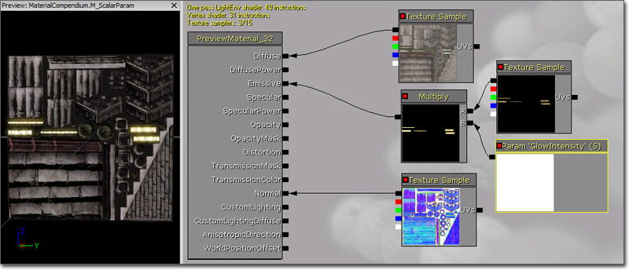
SceneDepth
SceneDepthは既存のシーンの深度を出力します。DestDepthと似た機能ですが、DestDepthは現在描写されているピクセルのサンプリングのみが可能で、SceneDepthは *どんな位置* の深度もサンプリングが可能です。 Properties（プロパティ）- Normalize（標準化） - Trueの場合、出力深度は[0、1]の範囲に標準化されます。
- UVs - 深度「テクスチャ」をどのようにサンプリングするかを決定する際に使用されるUVテクスチャ座標を受け取ります。
MaxZ = 16777215 NormalizedDepth = 1 - MaxZ / (SceneDepth + MaxZ)結果として標準化された深度は、0.0と1.0の範囲の線形です。
SceneTexture
SceneTextureは既存シーンのカラーを出力します。DestColorと似た機能ですが、DestColorは現状描写されているピクセルのカラーサンプリングのみが可能で、SceneTextureは *どんな位置* のカラーもサンプリングが可能です。 Properties（プロパティ）- Scene Texture Type -
- Screen Align - Trueの場合、[0、1]のUVテクスチャ座標をバックバッファの現状サイズにマップします。 すなわち、シーンテクスチャが相関的にシーンとマップ付されます。
- UVs - シーンテクスチャをどのようにサンプリングするかを決定する際に使用されるUVテクスチャ座標を受け取ります。
ScreenPosition
ScreenPosition表現式は、現在レンダリングされているピクセルのスクリーンスペース位置を出力します。 Properties（プロパティ）- Screen Align - Tureの場合、ScreenPositionが位置を同次座標で割り、スクリーンアライメント用に位置を[0、0] - [1、1]へマップ付します。
Sine
Sineは入力値（ラジアン）の正弦を出力します。 最も一般的には、Timeとその入力値を関連付けて、継続的な振動波形の出力の際に使用されます。出力値は-1と1の間を循環します。この機能とCosineの出力値の違いは出力波形がほぼ半分にオフセットされます。波形のビジュアル描写は下記になります。 Properties（プロパティ）
Properties（プロパティ）
- Period - 合成波の周期を特定します。 すなわち、振動が発生するまでにどのくらいの時間を要するか特定します。
SphereMask
SphereMaskは距離計算に基づいてマスク値を出力します。ある入力が点の位置で、その他の入力がある範囲を伴う球のセンターの場合、マスク値はトランジッションエリア内の外側に0で内側に1となります。1、2、3、4つのコンポーネントをもつベクター値に効果があります。 Properties（プロパティ）- Attenuation（減衰）Radius -
- Hardness（硬化） Percent - トランジションのエリアサイズを特定します。この機能はPhotoshopのブラシの硬さ調整のような働きをします。0はトランジッションが硬いことを意味し、100はトランジッションエリアが最大限（柔らかい）であることを意味します。
- A - チェックするポイントの位置を表す値を受け取ります。
- B - 球の真ん中を表す値を受け取ります。

SquareRoot
SquareRootは、入力値の平方根を出力します。SquareRootは単精度浮動小数点入力値のみを実行することができます。
Subtract
Subtractノードは二つの入力値を受け取り、最初の入力値から二番目の値を減算し差分を出力します。減算はチャンネル毎に実行されます。つまり、二番目の入力のRチャンネルが最初の入力値から減算され、二番目の入力のGチャンネルから最初の入力値が減算される、などです。 二番目の入力値が単一の定数値でない限り、両入力値は同数のチャンネルを持たなくてはいけません。定数はベクターのさまざまな入力値から減算されます。 Inputs（入力値）- A - 被減数の値を受け取ります。
- B - 減数される値を受け取ります。
StaticBool
StaticBoolは関数内で静的bool関数入力のデフォルトbool値を渡すために使用されます。ノードがスイッチされることはありませんので、StaticSwitchノードと合わせて使用しなくてはいけません。 Properties（プロパティ）- Value - bool値は、TRUE（チェック済）またはFalseです。
StaticBoolParameter
StaticBoolParameterは、boolパラメータを作成しswitchを実装しないという点を除いて、StaticSwitchParameterのような機能を持ちます。 Properties（プロパティ）- Default Value - パラメータのデフォルトbool値は、TRUE（チェック済）またはFalseです。
StaticComponentMaskParameter
StaticComponentMaskParameterは、マスク値が定数によって設定されるという点を除いて通常のComponent Maskのような機能を持ちます。ランタイム時に変更が出来ない静的で、Material Instance Editorによってのみ設定が可能です。 Static Component Maskはランタイムではなく、コンパイル時に適用されます。マテリアルの新バージョンは、マテリアルの静的パラメータの全ての*使用された*コンビネーションをコンパイルしなくてはいけません。これがされないと、シェーダーエクスプロージョンを引き起こします。マテリアルの静的パラメータ数と実際に使用するこれら静的パラメータの置換数を最小限に抑えるようにしてください。 Properties（プロパティ）- Default R - チェックされると、赤または最初の入力値のチャンネルが出力値として渡されます。
- Default G - チェックされると、緑または二番目の入力値のチャンネルが出力値として渡されます。
- Default B - チェックされると、青または3番目の入力値のチャンネルが出力値として渡されます。
- Default A - チェックされると、アルファまたは4番目の入力値のチャンネルが出力値として渡されます。
- Parameter Name - マテリアルのインスタンスやコードを通じてパラメータの確認に使用された名前を特定します。
StaticSwitchParameter（静的スイッチパラメータ）
StaticSwitchParameterは二つの入力値を受け取り、パラメータ値がtrueの時最初の入力値、または逆の場合2番目の入力値を出力します。このパラメータはランタイム時に変更が出来ないため静的な名前が付けられ、Material Instance Editorによってのみ設定が可能です。Static Switchesはランタイムではなくコンパイル時に適用されます。これはマテリアルに含まれないブランチは実行されることなく、静的スイッチがランタイム時に効果的にフリーとなります。もう一方で、マテリアルの新バージョンは、マテリアルの静的パラメータの全ての*使用された*コンビネーションをコンパイルしなくてはいけません。これがされないと、シェーダーエクスプロージョンを引き起こします。静的パラメータ数、実際に使用されているこれら静的パラメータの置換数を最小限に抑えるようにしてください。 Properties（プロパティ）- Default Value - Trueの場合、最初の入力値が出力値となります。さもなければ、二番目の入力値が出力値となります。
- Extended Caption Display - Trueの場合、表現式のタイトルバーに式の値を表示します。
- Parameter Name - マテリアルのインスタンスやコードを通じてパラメータの確認に使用された名前を特定します。
- A - さまざまなチャンネルの値を受け取ります。
- B - さまざまなチャンネルの値を受け取ります。
StaticSwitch
StaticSwitchは、スイッチを実装するのみでパラメータを作成しないという点を除いてStaticSwitchParameterのような機能を持ちます。 Properties（プロパティ）- Default Value - どの入力がアクティブになるかを決定するパラメータのデフォルトbool値、True（チェック済）またはFalseです。
- True - wsitchの Value がTrueの時使用される入力値です。
- False - wsitchの Value がFalseの時使用される入力値です。
- Value - アクティブな入力値を決定するbool値を受け取ります。
TextureCoordinate
TextureCoordinateは、マテリアルが他のUVチャンネルの使用、タイリング処理の特定、メッシュのUVの動作を許可する2チャンネルのベクター値という形でUVテクスチャを出力します。 Properties（プロパティ）- Coordinate Index - 使用するUVチャンネルを特定します。
- UTiling - U方向へのタイル処理の量を特定します。
- VTiling - V方向へのタイル処理の量を特定します。
- Un Mirror U - Trueの場合、U方向への任意のミラーリングを元に戻します。
- Un Mirror V - Trueの場合、V方向への任意のミラーリングを元に戻します。
TextureSample
TextureSampleは、テクスチャからカラー値を出力します。このテクスチャは、通常のTexture2D（法線マップを含む）、キューブマップ、またはムービーテクスチャとなります。 Properties（プロパティ）- Texture（テクスチャ） - 式によってサンプル化されたテクスチャを特定します。テクスチャを設定するには、まずContent Browserからテクスチャを選択します。そして式のプロパティウィンドウにあるTextureプロパティを選択して、「Use current Selection」ボタンをクリックします。
- UVs - テクスチャに使用するUVテクスチャ座標を受け取ります。UVへ値が入力されない場合、マテリアルが適用されたメッシュのテクスチャ座標が使用されます。TextureSampleがキューブマップのテクスチャを表す場合、UV座標は2チャンネルの値ではなく3チャンネルの値でなくてはいけません。
- RGB - カラーの3チャンネルRGBベクター値を出力します。
- R - RGBカラーの赤チャンネルを出力します。
- G - RGBカラーの緑チャンネルを出力します。
- B - RGBカラーの青チャンネルを出力します。
- A - RGBカラーのアルファチャンネルを出力します。テクスチャがアルファチャンネルを持たない場合、「アルファ」チャンネルを何かと接続することは、技術的に不正でない限りいつもゼロ（黒）の結果となります。
TextureSampleParameter2D
TextureSampleParameter2Dは、マテリアルのインスタンス及びコードを通じて修正されるパラメータという点を除いて、TextureSampleと同等の機能を持ちます。 Properties（プロパティ）- Parameter Name - マテリアルのインスタンスとコードを通じて、パラメータを確認する際に使用された名前を特定します。
- Texture - 式によってサンプル化されたテクスチャを特定します。
- UVs - テクスチャに使用するUVテクスチャ座標を受け取ります。 UVに値が入力されない場合、マテリアルが適用されたメッシュのテクスチャ座標が使用されます。
- RGB - カラーの3チャンネルRGBベクター値を出力します。
- R - RGBカラーの赤チャンネルを出力します。
- G - RGBカラーの緑チャンネルを出力します。
- B - RGBカラーの青チャンネルを出力します。
- A - RGBカラーのアルファチャンネルを出力します。テクスチャがアルファチャンネルを持たない場合、「アルファ」チャンネルを何かと接続することは、技術的に不正でない限りいつもゼロ（黒）の結果となります。
TextureSampleParameterCube
TextureSampleParameterCubeは、キューブマップを受け入れることとマテリアルのインスタンスとコードを通じて修正されるパラメータという点を除いて、TextureSampleと同等の機能を持ちます。 Properties（プロパティ）- Parameter Name（パラメータ名） - マテリアルのインスタンスとコードを通じてパラメータを確認する際に使用する名前を特定します。
- テクスチャ Texture - 式によってサンプル化されたキューブマップを特定します。
- UVs - テクスチャに使用するUVテクスチャ座標を受け取ります。 UVに値が入力されない場合、マテリアルが適用されたメッシュのテクスチャ座標が使用されます。この値は3チャンネルのベクター値でなくてはいけません。
- RGB - RGBカラーの3チャンネルRGBベクター値を出力します。
- R - RGBカラーの赤チャンネルを出力します。
- G - RGBカラーの緑チャンネルを出力します。
- B - RGBカラーの青チャンネルを出力します。
- A - RGBカラーのアルファチャンネルを出力します。テクスチャがアルファチャンネルを持たない場合、「アルファ」チャンネルを何かと接続することは、技術的に不正でない限りいつもゼロ（黒）の結果となります。
TextureObject
TextureObjectは、関数内のテクスチャ関数入力にデフォルトテクスチャを渡す際に使用されます。このノードは実際にテクスチャをサンプル化しないので、TextureSampleノードと合わせて使用されなくてはいけません。TextureObjectParameter
TextureObjectParameterは、テクスチャパラメタを定義し、テクスチャ入力と関数を呼び出すマテリアルに使用されるテクスチャオブジェクトを出力します。このノードは実際にテクスチャをサンプル化しないので、TextureSampleノードと併せて使用されなくてはいけません。 このノードはMaterialFunctionsと使用されます。 ].TextureSampleParameterMeshSubUV
TextureSampleParameterMeshSubUVは、マテリアルのインスタンスとコードを通じて修正されるという点を除いて、MeshSubUVと同等の機能を持ちます。. Properties（プロパティ）- Parameter Name（パラメータ名） - マテリアルのインスタンスとコードを通じてパラメータを確認する際に使用する名前を特定します。
- Texture（テクスチャ） - 式によってサンプル化されたテクスチャを特定します。
- UVs - UV入力は無視され、何もしません。
- RGB - RGBカラーの3チャンネルRGBベクター値を出力します。
- R - RGBカラーの赤チャンネルを出力します。
- G - RGBカラーの緑チャンネルを出力します。
- B - RGBカラーの青チャンネルを出力します。
- A - RGBカラーのアルファチャンネルを出力します。テクスチャがアルファチャンネルを持たない場合、「アルファ」チャンネルを何かと接続することは、技術的に不正でない限りいつもゼロ（黒）の結果となります。
TextureSampleParameterMeshSubUVBlend
TextureSampleParameterMeshSubUVBlendは、カスケード処理の際に線形ブレンドまたはランダムブレンドモードを使用してサブイメージ間をブレンド出来るという点を除いてTextureSampleParameterMeshSubUVと同等の機能を持ちます。 Properties（プロパティ）- Parameter Name（パラメータ名） - マテリアルのインスタンスとコードを通じてパラメータを確認する際に使用する名前を特定します。
- Texture（テクスチャ） - 式によってサンプル化されたテクスチャを特定します。
- UVs - UV入力は無視され、何もしません。
- RGB - RGBカラーの3チャンネルRGBベクター値を出力します。
- R - RGBカラーの赤チャンネルを出力します。
- G - RGBカラーの緑チャンネルを出力します。
- B - RGBカラーの青チャンネルを出力します。
- A - RGBカラーのアルファチャンネルを出力します。テクスチャがアルファチャンネルを持たない場合、「アルファ」チャンネルを何かと接続することは、技術的に不正でない限りいつもゼロ（黒）の結果となります。
TextureSampleParameterMovie
TextureSampleParameterMovieは、ムービーテクスチャ（Binkムービー）のみを受け付け、マテリアルのインスタンスかコードを通じて修正される点を除いて、TextureSampleと同等の機能を持ちます。. Properties（プロパティ）- Parameter Name（パラメータ名） - マテリアルのインスタンスとコードを通じてパラメータを確認する際に使用する名前を特定します。
- Texture（テクスチャ） - 式によってサンプル化されたムービーテクスチャを特定します。
- UVs - テクスチャに使用するUVテクスチャ座標を受け取ります。UVに入力がない場合、マテリアルが適用されたメッシュのテクスチャ座標が使用されます。
- RGB - RGBカラーの3チャンネルRGBベクター値を出力します。
- R - RGBカラーの赤チャンネルが出力されます。
- G - RGBカラーの緑チャンネルが出力されます。
- B - RGBカラーの青チャンネルが出力されます。
- A - RGBカラーのアルファチャンネルを出力します。テクスチャがアルファチャンネルを持たない場合、「アルファ」チャンネルを何かと接続することは、技術的に不正でない限りいつもゼロ（黒）の結果となります。
TextureSampleParameterNormal
TextureSampleParameterNormalはTextureSampleと同等の機能を持ちますが、マテリアルのインスタンスとコードを通じて修正が出来るパラメータの法線マップテクスチャとの使用が最適です。NormalMapFormats から、法線マップで使用されるパラメータを特定する際に何故このノードの使用が好まれるのか説明をご覧ください。 Properties（プロパティ）- Parameter Name（パラメータ名） - マテリアルのインスタンスとコードを通じてパラメータを確認する際に使用する名前を特定します。
- Texture（テクスチャ） - 式によってサンプル化された法線マップを特定します。
- UVs - テクスチャが使用するUVテクスチャ座標を受け取ります。UVに入力がない場合、マテリアルが適用されたメッシュのテクスチャ座標が使用されます。
- RGB - RGBカラーの3チャンネルRGBベクター値が出力されます。
- R - RGBカラーの赤チャンネルが出力されます。
- G - RGBカラーの緑チャンネルが出力されます。
- B - RGBカラーの青チャンネルが出力されます。
- A - RGBカラーのアルファチャンネルを出力します。テクスチャがアルファチャンネルを持たない場合、「アルファ」チャンネルを何かと接続することは、技術的に不正でない限りいつもゼロ（黒）の結果となります。
TextureSampleParameterSubUV
TextureSampleParameterSubUVは、マテリアルのインスタンスかコードを通じて修正が出来るパラメータという点を除いて、ParticleSubUVと同等の機能を持ちます。 Properties（プロパティ）- Parameter Name（パラメータ名） - マテリアルのインスタンスとコードを通じてパラメータを確認する際に使用する名前を特定します。
- Texture（テクスチャ） - 式によってサンプル化されたテクスチャを特定します。
- UVs - UV入力は無視され、何もしません。
- RGB - RGBカラーの3チャンネルRGBベクター値を出力します。
- R - RGBカラーの赤チャンネルを出力します。
- G - RGBカラーの緑チャンネルを出力します。
- B - RGBカラーの青チャンネルを出力します。
- A - RGBカラーのアルファチャンネルを出力します。テクスチャがアルファチャンネルを持たない場合、「アルファ」チャンネルを何かと接続することは、技術的に不正でない限りいつもゼロ（黒）の結果となります。
Time
Timeノードはマテリアルに時間の推移を追加する際に使用されます。Panner、 Cosineやその他の時間依存演算がその例となります。 Properties（プロパティ）- Ignore Pause - Trueの場合、ゲームが一時停止されても時間は経過します。

Transform
Transformは3チャンネルベクター値をある参照座標システムをその他のシステムへ変換します。 デフォルトで、マテリアルの全てのシェーダー計算はタンジェント空間で処理されます。ベクター定数、カメラベクター、ライトベクター等はマテリアル使用される前にタンジェント空間で変換されます。Transformは、これらのベクター値がタンジェント空間からワールド空間、ローカル空間、ビュー空間の座標システムへの変換を可能にします。また、ワールド空間とローカル空間をその他の参照座標システムへの変換も可能にします。 Properties（プロパティ）- Transform Source Type - 現在の座標システムが変換されるベクターを特定します。ワールド、ローカルまたはタンジェントのいずれかになります。
- Transform Type - タンジェント座標システムが変換するベクターを特定します。ワールド、ビュー、ローカル、タンジェントのいずれかになります。
TransformPosition
このノードはオリジンからworld posを派生する際に使用されると、重量な精密問題が発生し非推奨となっています。 TransformPositionはTransformTypeの変数によって、スクリーン空間や指定された目的空間からどんな位置でも変換が可能となります。現在はワールド空間への変換のみがサポートされています。この式はマテリアルのワールド空間座標を取得する際にしようされます。ワールド位置を可視化するには、直接エミッシブにつないでください。TwoSidedSign
TwoSidedSignは、Phongの機能と合致させるため両面カスタムライティングマテリアルの背面で法線を反転させる際に有益です。＋1は表面へ、-1は両面マテリアルの背面へ反転します。WorldPosition
WorldPositionはワールド空間の現在のピクセル位置を出力します。単にエミッシブにつなぐことによって可視化が出来ます。 一般的な使用方法はカメラからピクセル（PixelDepthから直行距離と対照的に）までの反射距離を求めます。WorldPositionはテクスチャ座標として使用や、近距離のテクスチャ座標の組み合わせを使用した無関係のメッシュを持つことができます。以下はWorldPosition.xyを使用したテクスチャの平面マップの基本例です。WorldNormal
WorldNormalはワールド空間の頂点法線を出力します。WorldPositionOffsetのような頂点シェーダーで実行されるマテリアル入力のみで使用が可能です。メッシュの拡大や縮小の際に有益です。法線とオフセットされる位置は、UVシーム（綱ぎ目）に沿ってジオメトリを割ることに留意ください。 (Hover for animated preview)VectorParameter
VectorParameterはマテリアルのインスタンスとコードを通じて修正が出来るパラメータという点を除いて、Constant4Vectorと同等の機能を持ちます。VectorParameterの利点のひとつとして挙げられるのが、Color pickerを使用して値が設定出来るということです。. Properties（プロパティ）- Default Value
- R - 式が出力する赤の浮動点小数値、最初の値、またはベクターのチャンネルを特定します。
- G - 式が出力する緑の浮動点小数値、二番目の値、またはベクターチャンネルを特定します。
- B - 式が出力する青の浮動点小数値、三番目の値、またはベクターチャンネルを特定します。
- A -式が出力するアルファの浮動点小数値、4番目の値、またはベクターチャンネルを特定します。
- Parameter Name（パラメータ名） - マテリアルのインスタンスやコードを通じてパラメータを確認する際に使用する名前を特定します。
VertexColor
VertexColorは、マテリアルやスプライトパーティクルエミッタ―に影響するカラーモジュールの出力のアクセスポイントです。 * Outputs（出力値）*- RGB - RGBカラーの3チャンネルRGBベクター値を出力します。
- R - RGBカラーの赤チャンネルを出力します。
- G - RGBカラーの緑チャンネルを出力します。
- B - RGBカラーの青チャンネルを出力します。
- A - RGBカラーのアルファチャンネルを出力します。